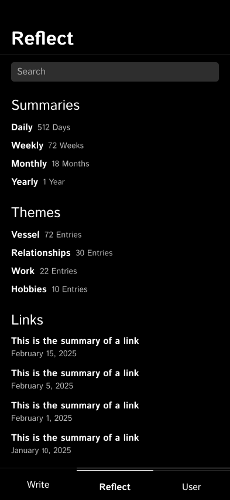
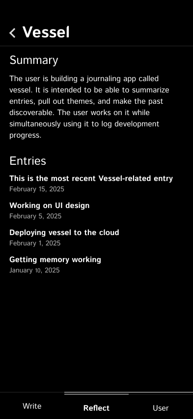

Journaling has always been a powerful tool for self-reflection, but traditional methods can feel cumbersome and isolating. Vessel transforms your journaling experience with an AI companion that listens, reflects, and helps you uncover hidden insights.
Unload your thoughts and feelings freely. Vessel is your always-ready space to capture whatever's on your mind, big or small.
See the bigger picture of your inner world. Vessel AI provides daily, weekly, and monthly summaries, plus extracted themes, so you can spot patterns and track your evolution.
 Go beyond surface thoughts and unlock deeper insights. Explore a theme with a summary and all of the entries where that theme comes up.Ready to embark on a journey of self-discovery? Join Vessel and experience the power of AI-driven journaling.